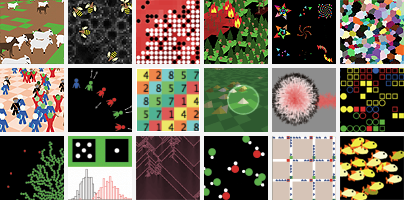

NetLogo is a programmable modeling environment for simulating natural and social phenomena. It was authored by Uri Wilensky in 1999 and has been in continuous development ever since at the Center for Connected Learning and Computer-Based Modeling.
NetLogo is particularly well suited for modeling complex systems developing over time. Modelers can give instructions to hundreds or thousands of “agents” all operating independently. This makes it possible to explore the connection between the micro-level behavior of individuals and the macro-level patterns that emerge from their interaction.
NetLogo lets students open simulations and “play” with them, exploring their behavior under various conditions. It is also an authoring environment which enables students, teachers and curriculum developers to create their own models. NetLogo is simple enough for students and teachers, yet advanced enough to serve as a powerful tool for researchers in many fields.
NetLogo has extensive documentation and tutorials. It also comes with the Models Library, a large collection of pre-written simulations that can be used and modified. These simulations address content areas in the natural and social sciences including biology and medicine, physics and chemistry, mathematics and computer science, and economics and social psychology. Several model-based inquiry curricula using NetLogo are available and more are under development.
NetLogo is the next generation of the series of multi-agent modeling languages including StarLogo and StarLogoT. NetLogo runs on the Java Virtual Machine, so it works on all major platforms (Mac, Windows, Linux, et al). It is run as a desktop application. Command line operation is also supported.